Drywall
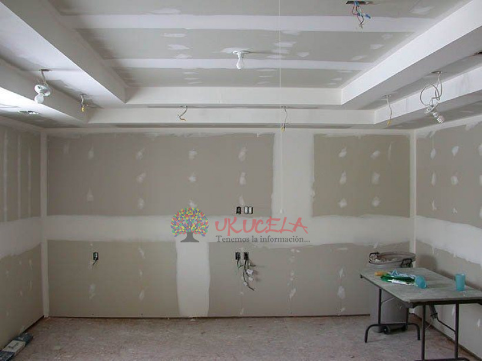
Sistema constructivo en seco para cielos falsos y muros divisorios. Permite integración de iluminación técnica y acabados lisos o texturizados.
Revestimientos
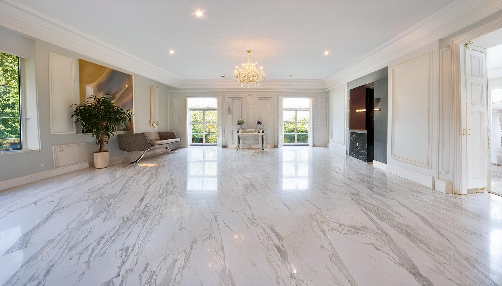
Mármol: piedra natural de alta gama, utilizada en cubiertas, muros y pisos. Vetas únicas y elegancia atemporal.
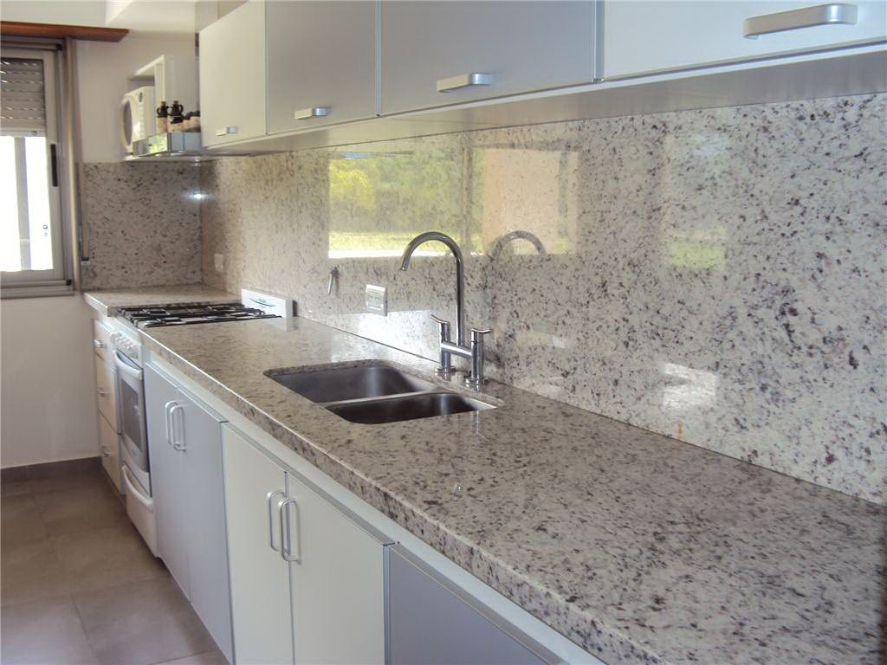
Granito: superficie pétrea resistente a impactos y calor. Ideal para cocinas y baños.
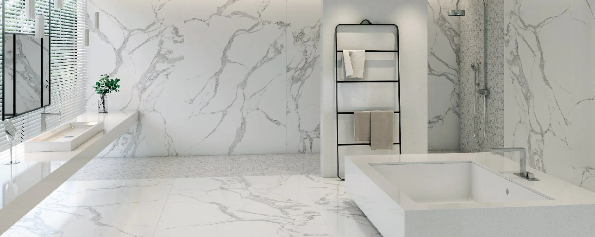
Piedra sinterizada: material técnico de alta resistencia, apto para superficies de trabajo y muros.
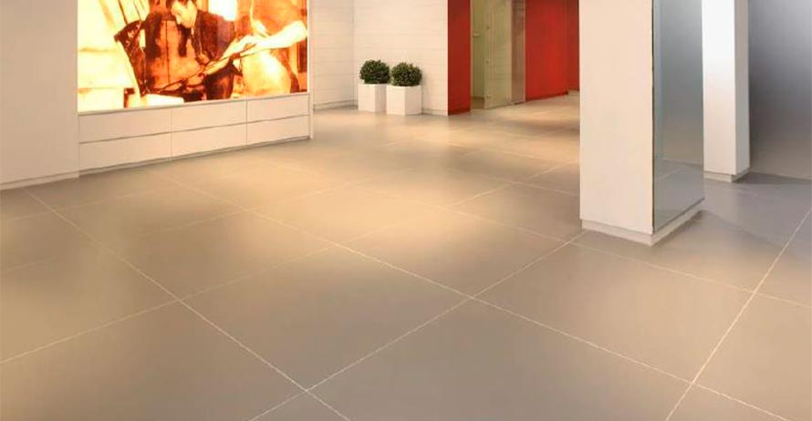
Cerámica de gran formato: revestimiento que reduce juntas visibles. Ideal para baños y cocinas.
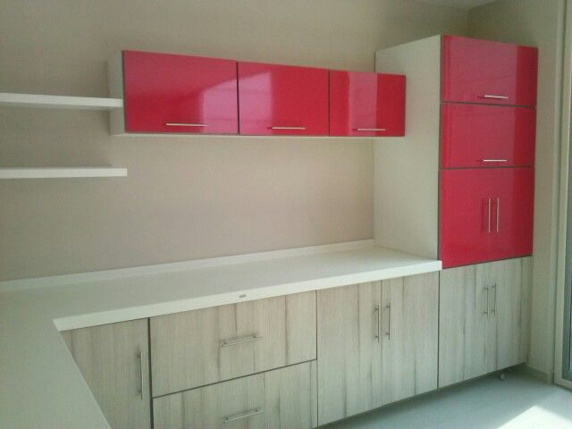
Melamina texturizada: acabado versátil para mobiliario, vestidores y closets.
Griferías
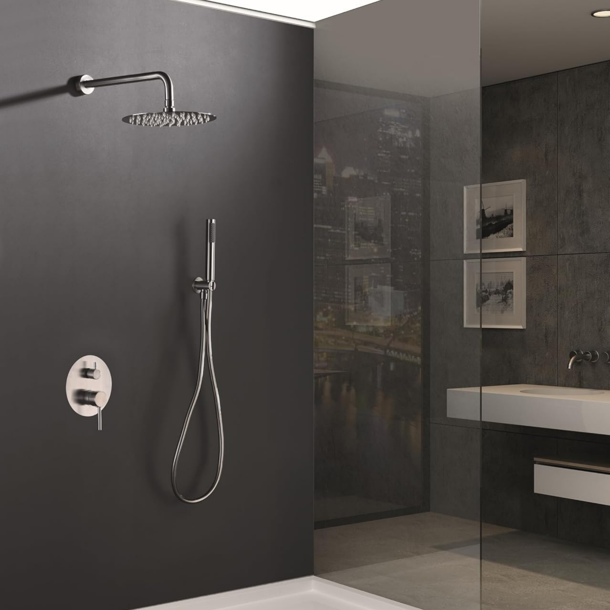
Grifería empotrada: diseño limpio y funcional, ideal para baños principales y lavamanos dobles.
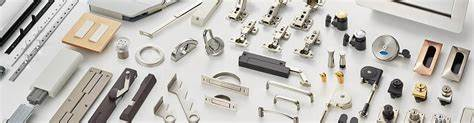
Herrajes ocultos: favorecen la estética minimalista y la continuidad visual en mobiliario técnico.
Pisos
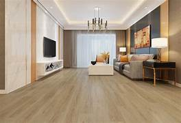
SPC (Stone Plastic Composite): piso vinílico de alta resistencia, impermeable y de fácil instalación.
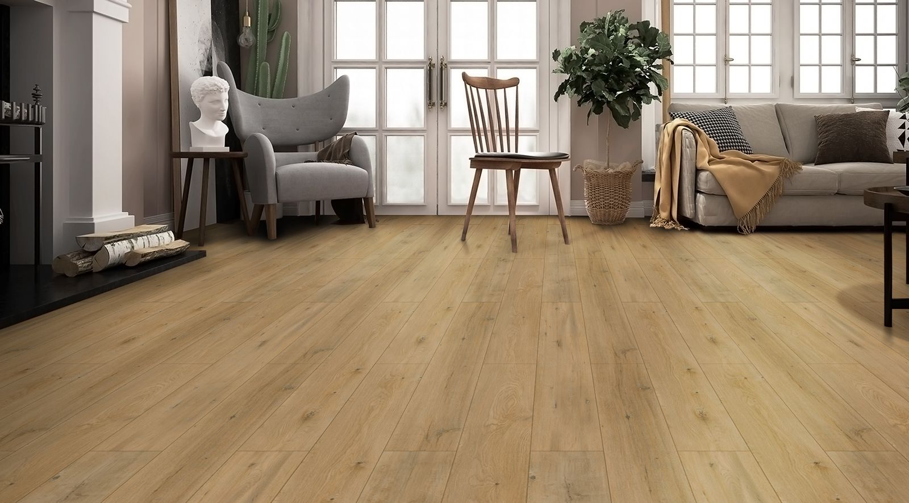
H₂O: piso laminado resistente al agua, con núcleo sellado. Ideal para zonas húmedas y sociales.
Iluminación técnica
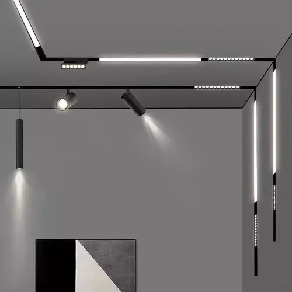
Spots empotrados: luminarias de precisión integradas en cielos falsos. Ideales para acento puntual y zonas de trabajo.
Perfiles LED de silicio: iluminación indirecta integrada en cielos falsos. Acentúan líneas arquitectónicas y generan atmósferas técnicas.

Luz cálida ambiental: ideal para salas y dormitorios. Genera confort visual y atmósferas acogedoras.